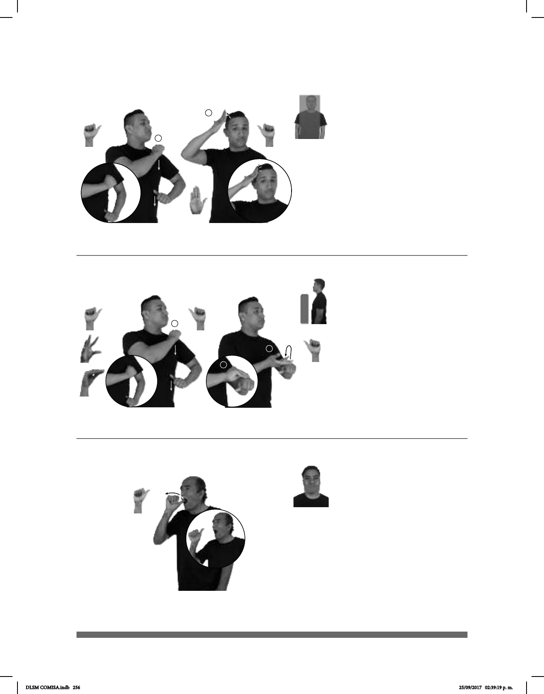

256
1
2
1
2
3
(A-70)
(A-71)
(A-72) Avena
pos-MI JEFE AUTORIDAD pos-SUYO PROYECTO
Mi jefe es la autoridad del proyecto.
___________________________________________neg
LEY dm-CIUDADANA GOBIERNO NO AUTORIZAR
El gobierno no autorizó la ley ciudadana.
AVENA CEREAL SANO
La avena es un cereal saludable.
Seña: SC: I. SB; II. SM
I. MD y MB A.1; II. B-P.2
I. MD palma hacia la izquierda.
MB palma hacia la derecha; II. Palma hacia la
izquierda.
I. Del lado izquierdo: MD sobre el
hombro y se desliza hacia el abdomen. MB
sobre el abdomen y se desliza hacia la cintura;
II. Sobre el lado derecho de la cabeza.
I. MD y MB recto
simultáneamente; II. La MD golpea la cabeza
repetidamente.
Labios protruidos.
sust. f. Individuo, grupo de
personas o institución que tiene a su cargo el
ejercicio del poder político, administrativo,
judicial, etc.
Seña: SC: I. y II. SB
I. MD y MB A.1; II. MD seña que
pasa de 5.4 a O.4, MB A.1
I. MD palma hacia la izquierda.
MB palma hacia la derecha; II. MD la palma inicia
hacia arriba y termina hacia abajo. MB palma
hacia abajo.
I. Del lado izquierdo: MD sobre el
hombro y se desliza hacia el abdomen. MB sobre
el abdomen y se desliza hacia la cintura; II. A la
altura del pecho. MD sobre MB.
I. MD y MB recto simultáneamente;
II. La muñeca de MB gira y cambia la orientación
de la mano.
Labios protruidos.
v. tr. Dar una persona con autoridad el
permiso a alguien de hacer algo o dar una autori-
dad el visto bueno en un trámite.
Seña: SM
A.4
Palma hacia la izquierda.
Sobre los dientes superiores.
Recto hacia afuera
repetidamente.
Boca abierta
mostrando los dientes.
sust. f. Planta gramínea anual
con cañas delgadas protegidas por hojas
DLSM COMISA.indb 256 25/09/2017 02:39:19 p. m.